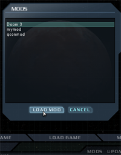

|
A 'mod' is a modification to the game. Generally it involves changing
the source code as well as adding assets, but it doesn't always have to.
Making a mod for Doom3 is very similar to making a mod for Quake III Arena.
The biggest change (apart from the rendering) is that there is a lot more
behavior defined in text files rather than code.

Mods are stored in the Doom 3 folder as siblings to the 'base' folder (not in
the 'base' folder). The base folder is where the standard Doom 3 code and assets
are stored. If you are not running a mod, then everything is taken from
'base'. When you load a mod, the base folder is searched only if a file cannot be
found in the mod folder. This allows you to reference files in standard Doom 3
without having to distribute them with your mod. This method was used in Quake 3.
Doom 3 populates the 'Mods' menu by scanning the for any subfolders containing
Pack Files. It gets the name from a file in the mod folder
named 'description.txt' This file should contain 1 line of text no more than
about 40 characters long. If the description file is missing, it uses the
name of the directory.
|